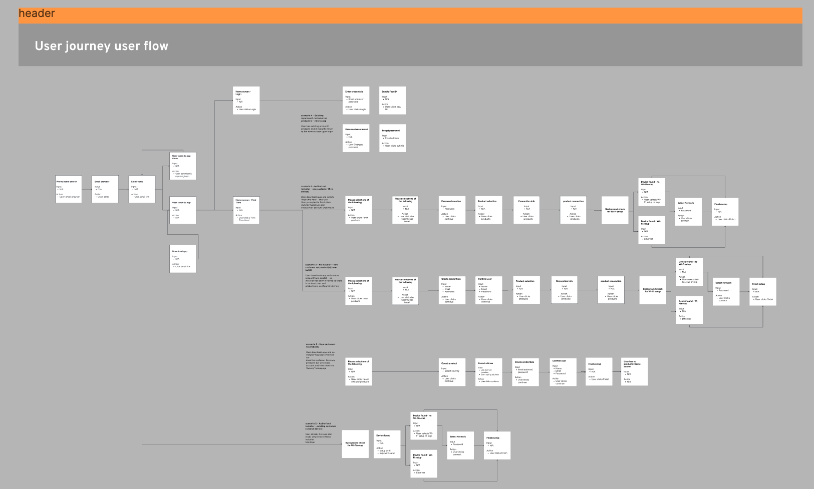

Away from the computer, I find joy in the simple pleasures of life. Living near the coast of South Devon with my wife and 2 girls, you'll often find me embracing the beach, with its soothing waves & sandy shores. Swimming in the refreshing sea and cycling the rolling hills are my preferred ways to unwind and stay invigorated. Life is a balance, and in these outdoor pursuits, I discover the perfect counterpoint to my digital endeavours, ensuring a well-rounded and fulfilling existence beyond the realm of code and design.
hello there,
Stuart Jones
Senior Product Manager | Strategy, UX & Digital Ecosystems
I help businesses define and deliver user-centric digital products—combining strategic leadership, UX insight, and delivery excellence to drive growth and engagement.
With over ten years’ experience driving product strategy, UX-aligned delivery, and cross-functional team leadership...
Working across startups and enterprises, I’ve guided digital ecosystems—from consumer platforms to installer tools—aligning stakeholder vision, user insight, and agile delivery. I now apply this to senior product roles—especially in remote, high-growth environments.
At the core of my process is a user-focused design philosophy, ensuring that every solution is intuitive, accessible, and built to drive meaningful engagement and results.
My Latest Projects
Here are a few past projects I've worked on. Due to non-disclosure agreements, I'm unable to showcase all my projects but if you'd like to hear more about my experience drop me a message

myenergi App & Web Portal
Challenge:
Fragmented UX across app & portal.
Fragmented UX across app & portal.
Approach:
Defined strategic roadmap, aligned teams, drove feature delivery using outcome-oriented metrics.
Defined strategic roadmap, aligned teams, drove feature delivery using outcome-oriented metrics.
Outcome:
Delivered features improving user engagement and retention; raised overall product stickiness.
Delivered features improving user engagement and retention; raised overall product stickiness.
myenergi Installer Assistant App
Challenge:
Complex installer workflows causing delays.
Complex installer workflows causing delays.
Approach:
Led discovery sprints, streamlined UX, delivered via dual-track Agile.
Led discovery sprints, streamlined UX, delivered via dual-track Agile.
Outcome:
Reduced install time and raised installer NPS.
Reduced install time and raised installer NPS.

Dyson Purifiers & App
Challenge:
Disconnected physical and digital UX across purifier hardware and web/app.
Disconnected physical and digital UX across purifier hardware and web/app.
Approach:
Unified product vision across hardware and digital teams, aligned roadmap with stakeholders, integrated UX-focused strategy.
Unified product vision across hardware and digital teams, aligned roadmap with stakeholders, integrated UX-focused strategy.
Outcome:
Launched cohesive product suite, seamless UX contributed to Dyson’s expansion in smart-home segment.
Launched cohesive product suite, seamless UX contributed to Dyson’s expansion in smart-home segment.
Motherborn Collective
Challenge:
Non-profit lacked cohesive digital presence to support rebranding and engagement.
Non-profit lacked cohesive digital presence to support rebranding and engagement.
Approach:
Led UX-led redesign aligning brand vision, crafted accessible user journeys, delivered streamlined website.
Led UX-led redesign aligning brand vision, crafted accessible user journeys, delivered streamlined website.
Outcome:
Launched platform boosting visibility, supporter engagement, and fundraising impact.
Launched platform boosting visibility, supporter engagement, and fundraising impact.
Product Management & UX Leadership
Delivering strategic product leadership, user-first thinking and seamless delivery—designed for remote, high-growth and fixed-term environments.
A well-defined design process is essential to delivering high-quality, user-centric digital solutions. From the outset, I focus on understanding your goals, the target audience, and the problem we're solving. Through user research, wireframing, prototyping, and testing, I ensure each decision is backed by insight and every design element is purpose-driven. I’m also experienced in working within teams and adapting to the established processes and methods of different companies, ensuring smooth collaboration and alignment with internal workflows. Whether starting from scratch or joining an ongoing project, I pride myself on hitting the ground running and adding value from day one. This structured approach helps streamline development, reduce risks, and create an end product that not only meets but exceeds expectations. Ultimately, a solid design process leads to intuitive, effective solutions that drive real business results and long-term user satisfaction.
Explore My Design Process
Every successful project begins with a clear understanding of the problem at hand and
the scope within which it must be solved.
This first step is all about framing the project correctly, ensuring that all
stakeholders are aligned, and establishing a foundation that will guide the rest of the
design process.
At this stage, I collaborate closely with clients, stakeholders, and internal teams to
gather as much context and information as possible.
Through in-depth discussions, surveys, and review of any existing documentation, I
identify the core objectives, constraints, and pain points that the project aims to
address.
Defining the scope is crucial because it outlines the parameters of the project—what is
within scope and what is not—ensuring that resources are allocated effectively.
This clarity minimises scope creep and helps manage expectations throughout the
project's lifecycle.
A well-delineated scope will also inform decisions on functionality, user flows, and
technical requirements.
By diving deep into the business goals and the context surrounding the project, I
establish a clear roadmap for the next phases.
This understanding also allows me to highlight any potential risks early on, from
technical challenges to user adoption hurdles, so we can address them proactively.
Additionally, setting out clear success metrics early on helps everyone involved measure
progress and know when the project is truly complete.
Whether it’s a target conversion rate, user retention goal, or market share increase,
these key performance indicators (KPIs) give us a solid foundation for decision-making
throughout the design and development process.
In sum, a well-defined problem and scope ensure that all subsequent efforts stay
focused, purposeful, and aligned with business goals, creating a strong foundation for
the work to come.
With a clear understanding of the problem and scope in place, the next step in the process is to build empathy for the end users. The goal here is to dive deep into understanding who the users are, what they need, what their pain points are, and how they currently interact with similar products or services. This phase is rooted in the principles of user-centred design, where the aim is to uncover insights that will drive the direction of the solution.
 User research is the cornerstone of this phase. This can take many forms: interviews,
surveys, competitor analysis, user testing, analytics reviews, and field observations.
By gathering qualitative and quantitative data, I aim to create a comprehensive picture
of the users, their behaviours, motivations, and frustrations.
This is not just about gathering information, but interpreting it in a way that reveals
underlying needs that may not be immediately obvious.
The research phase also involves identifying and understanding market trends, emerging
technologies, and competitive landscapes to ensure that the design solutions are not
only user-friendly but also innovative and relevant.
User research is the cornerstone of this phase. This can take many forms: interviews,
surveys, competitor analysis, user testing, analytics reviews, and field observations.
By gathering qualitative and quantitative data, I aim to create a comprehensive picture
of the users, their behaviours, motivations, and frustrations.
This is not just about gathering information, but interpreting it in a way that reveals
underlying needs that may not be immediately obvious.
The research phase also involves identifying and understanding market trends, emerging
technologies, and competitive landscapes to ensure that the design solutions are not
only user-friendly but also innovative and relevant.
With the insights gathered from research, the next step is to explore a range of
possibilities and directions for the design.
This involves brainstorming, sketching, and developing initial concepts that might
address the user needs identified in the previous phase.
I often use tools like user personas, journey maps, and empathy maps to organise these
insights and provide a visual guide to the users' experiences, helping to align the team
and stakeholders around the user’s core needs.
Empathy and research provide a solid foundation that allows the design to be both
user-driven and contextually relevant.
It ensures that the resulting solutions aren’t just based on assumptions but are backed
by real-world data and insights.
By staying close to the user’s needs and environment, the design process moves from
abstract to tangible, with clear targets and well-informed decisions at every stage.
Once I’ve gathered insights and explored different avenues, the next step is to embrace divergent thinking. This phase is about generating as many ideas and potential solutions as possible—without immediately worrying about their feasibility or limitations. The goal is to break free from conventional thinking and push creative boundaries to uncover innovative solutions that could address the user needs and project goals in new ways.
During divergent thinking, I use brainstorming techniques, mind mapping, and design
sprints to quickly generate multiple ideas.
This is a time for pushing the envelope and exploring the edges of what might be
possible within the context of the project.
At this stage, no idea is too wild, and no suggestion is dismissed too quickly. Every
potential solution is considered, from small tweaks to existing ideas to entirely new,
bold concepts that could transform the user experience.
Divergence in design encourages creativity and allows for diverse perspectives.
It’s a way to challenge assumptions and broaden the design space, ensuring that we don’t
settle for the first or most obvious idea that comes to mind.
By looking at the problem from different angles and considering a wide range of
solutions, we increase the likelihood of finding the most effective and innovative
design approach.
This open-minded approach helps uncover unexpected solutions and makes the design
process more dynamic and iterative.
While divergent thinking encourages freedom and creativity, it’s important to recognise
that the ideas generated during this phase will eventually need to be refined and
narrowed down.
Divergence is only one part of the design process; after this phase, we enter the
process of convergence, where we’ll take the best ideas and explore them in greater
depth.
Once we have a wide array of ideas from the divergent thinking phase, it’s time to begin narrowing down those ideas and testing their viability. This is where the concept starts to take shape in tangible form. Prototyping is a key part of the process, and I use this phase to translate abstract concepts into working models, whether they are low-fidelity wireframes or high-fidelity interactive prototypes.

Prototypes allow us to visualise how the design will function, enabling us to explore
interactions, flows, and user journeys in a way that static designs can’t.
During this phase, I focus on creating something simple but interactive enough to
demonstrate core functionality, whether it’s a clickable wireframe or an interactive
mockup.
Prototypes make it easier to identify usability issues early on and allow for quick
iteration based on user feedback.
Refinement is the natural next step after prototyping. This is where the design is
iterated upon, optimised, and aligned more closely with user needs and project
requirements.
Based on feedback from usability tests, user sessions, and team reviews, I refine the
design by improving visual elements, interaction patterns, and flow.
This is a collaborative process where both design and development teams may offer input
on technical feasibility and user interaction, ensuring that the solution not only looks
good but works well.
Testing plays a critical role in this phase. Whether it’s A/B testing, user testing, or
accessibility audits, I ensure that the design is evaluated from all angles before
moving on to the development stage.
This includes testing with real users to uncover pain points, gauge user satisfaction,
and ensure that the design is intuitive and functional.
Testing helps mitigate risks by allowing us to identify flaws early and make necessary
adjustments before the product goes live.
After refining and testing prototypes, the next stage in the process is moving into development, where the design begins to come to life in code. At this point, I work in close collaboration with the design and development teams to turn wireframes and mockups into functional, interactive experiences. My experience as both a designer and frontend developer allows me to bridge the gap between design and development, ensuring that the final product is both visually appealing and technically robust.
 In this phase, I work alongside developers to ensure that the design is faithfully
translated into code while maintaining a high standard of usability, performance, and
accessibility.
I help write clean, efficient code, and ensure that it adheres to the best practices for
front-end development. Whether it's building responsive layouts, implementing
animations, or integrating with backend services,
the development phase is where the user interface and interactions take shape.
In this phase, I work alongside developers to ensure that the design is faithfully
translated into code while maintaining a high standard of usability, performance, and
accessibility.
I help write clean, efficient code, and ensure that it adheres to the best practices for
front-end development. Whether it's building responsive layouts, implementing
animations, or integrating with backend services,
the development phase is where the user interface and interactions take shape.
But even as development progresses, testing doesn’t stop. In fact, this phase involves
more intensive testing, as we ensure the product works across different devices,
browsers, and screen sizes.
I conduct thorough quality assurance (QA) testing, where I focus on usability,
functionality, and performance.
User testing is also crucial here to confirm that the end product performs as expected
in real-world conditions.
Feedback loops continue with stakeholders to ensure the solution meets business goals
and user needs.
In parallel with development, I ensure that the project undergoes rigorous accessibility
testing, ensuring that the product is usable by people with various disabilities.
Testing, optimisation, and collaboration during this stage make sure the product is not
only functional but also polished and ready for release.
A solid design process isn’t linear; it’s a dynamic, iterative journey. By deeply
understanding the problem, empathising with users, exploring ideas, prototyping and
testing rigorously,
and working closely with development, we can create a product that truly resonates with
users and achieves business goals.
This process is a blend of research, creativity, testing, and collaboration—where every
phase builds on the last, ensuring that the final result is a thoughtful, effective, and
user-centric solution.
At the heart of this process is a commitment to understanding and solving real user
problems. Whether I’m working with a brand-new concept or refining an existing product,
I strive for design solutions that are not only aesthetically pleasing but are also
functional, efficient, and intuitive.
Ultimately, a great design process brings together the best of strategy, creativity, and
technology to create solutions that drive tangible, lasting results.
I'd love to walk you through the journey one of my projects...why not email me.
A little about me...
What others are saying...
"We couldn’t be happier with the website Stuart created for us! He took the time to understand our vision and brought it to life with a design that’s both beautiful and functional. His attention to detail, technical expertise, and willingness to go the extra mile made the whole process smooth and enjoyable. Communication was always clear, and he was incredibly patient with our (many!) requests, ensuring every element was just right for us. We have no hesitation in recommending Stuart's services!"
Steph Pope (Co-Founder & Director) - The MotherBorn Collective CIC
"Working with Stuart was an absolute pleasure, he nailed the website build, flows great and looks the part. Good feedback from all! Thank you!"
Rob Taylor (Owner) - South Devon Welding